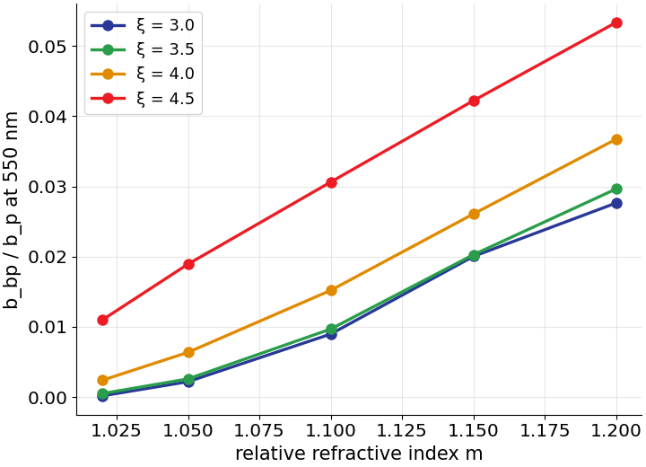

D · Particle scattering
VSF of particles, b_p, b_bp, spectral shape, size and refractive index (slides 46–58)
Strong forward scattering by particles

Lecture slide 48
- Diffraction dominates
- Mie theory reproduces data
- Differences in the backward part
Rayleigh and Mie patterns

Lecture slide 47
- Rayleigh: symmetric
- Small Mie particle: forward lobe
- Large particle: narrow forward peak
Large and small particles

Lecture slide 64
- Large: ∝ area (geometric)
- Small: ∝ volume (Rayleigh)
- In between: Mie
Spectral power law

Lecture slide 49
- bp(λ) = bp(550)(λ/550)n
- n between 0 and −3
- mean ≈ −1
Power law and size distribution
Shape of the power law

Own computation: bp(λ)/bp(550) for n = 0, −1, −3
Measured exponents

Lecture slide 51 (Snyder et al., 2008)
- bp: scattered about −0.3
- bbp: near −1
- Power law good to ±0.1 (slide 52)
Size controls the exponent (Mie check)

Own Mie computation: exponent versus Junge slope ξ; dashed = −(ξ−3), i.e. ξ = γ + 3 (slide 68)
Backscatter ratio versus refractive index

Own Mie computation, Junge distributions: bbp/bp rises with refractive index (slide 71)
Phytoplankton and backscattering

Lecture slide 57
- Much higher than Mie predicts
- Particles > 3 µm: ≈ 50 % of bbp
- Dall’Olmo et al., 2009
Scattering budget

Lecture slide 58
- Particles dominate in both cases
- Water < 5 %
- Case 2: ×10 larger
Key points
- Particles: forward-peaked VSF (diffraction)
- bp ∝ λn, n ≈ −1 on average
- Size → exponent; index → bbp/bp
- Phytoplankton backscatter more than Mie says